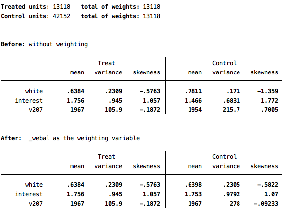

Chapter 7 Matching and Balancing
Let’s imagine that we want to know whether having children makes an individual more likely to support the Children’s Health Insurance policy (variable cc332b). We could simply do a cross-tabulation of having children and support for the policy. In a set-up like this one, we are essentially treating having a child as the treatment and one’s opinion on the insurance program is the outcome variable.
svy: tab cc332b v242, colBased on this simple bivariate analysis, it appears as though inviduals who have children are about 5 points more supportive of the children’s insurance program (p<.001). But, of course, having children is not randomly assigned, so there may be many ways in which those with children are different from those without them, and we would want to be sure to account for these factors when making this comparison. We would want to account for as many of those factors as possible when making this comparison.
We will attempt to account for the following variables:
| Variable Name | Description |
|---|---|
| v207 | Year of birth |
| v244 | Interest in news and public affairs |
| v211 | Race |
Of course, it is possible (and probably desirable) to match/balance on far more variables than this, but for the sake of this particular exercise, these three variables will suffice.
7.1 Coarsened Exact Matching
Coarsened exact matching is a method that essentially seeks to find observations in the “control” and “treatment” groups that are close or exact matches on the variables you specify. So, in this case, we are looking to pair individuals who do and do not have children based on their year of birth, interest in news, and race.
Note that you will need to install the program for this by typing:
ssc install cemThen follow the links to make sure the cem module is installed on your Stata.
Now, before we begin, we should work to recode the variables that we are going to use in this analysis.
recode cc332b 2=0, gen(chip)
recode v242 2=0, gen(kids)
recode v244 7=4, gen(interest)
recode v211 2/9=0, gen(white)Now, we have one interval variable (year of birth) and two categorical variables that we wish to match on. Because our sample size is so large, we can force cem to exact match on the categorical variables (white and interest). Then we will coarsen exact match on year of birth. The variable kids is our indicator of the treatment. Note that the treatment can only take on two values. If you have multiple treatments, then things become a bit more complicated.
To avoid an error message, drop any cases on which you do not have a value for the treatment variable:
drop if kids==.Before we do the matching, let’s take a look at just how imbalanced our control and treatment groups are. We can do this by using the imb command:
imb white interest v207, treatment(kids)The main statistic to look at here is the L1 value. The L1 statistic takes on values ranging from 0 to 1, indicating the degree of imbalance on the variables specified. We will keep this value of L1 in mind to see how much we can reduce the imbalance by matching.
Now go ahead and conduct the matching:
cem white (#0) interest (#0) v207, treatment(kids)Note that the L1 statistic is now just .09. So we have brought it very close to 0, and far away from the the degree of imbalance we had before matching. We can also see that we were able to find a match for most cases in our data (only 184 unmatched cases). Note that L1 is smallest for the two variables on which we did exact matching (white and interest).
After conducting the cem, we now have three new variables in our dataset. cem_matched is simply an indicator of which cases were matched versus unmatched. The most important variable is cem_weights. Unless you chose to do a k2k match, it will be crucial to use the weights in your analyses. However, you must use these as iweights. So, now let’s examine the effect of having kids both before matching and after matching:
reg chip kidsreg chip kids [iw=cem_weights]The second solution is the one that incorporates the matching, through the implementation of the weights. Note that the statistically significant difference of 5.6 points observed before matching vanishes once we do the matching. In that analysis, there is a very small and statistically indistinguishable difference between those who do and do not have kids when it comes to attitudes towards the children’s health insurance policy.
The weights created by cem are to provide the most efficient use of the data possible by using as many observations as possible. However, if you have a large number of observations and wish to simplify your analysis, you can to k2k matching, which means pairs will be created so that for each individual in the control group there is just one match in the treatment group (and vice versa). To do this, simply add the k2k option after the comma in the cem command. And then, limit your subsequent analyses only to those who are identified as having a match by the cem_matched variable:
cem white (#0) interest (#0) v207, treatment(kids) k2k
reg chip kids if cem_matched==17.2 Entropy Balancing
Entropy balancing is an alternative approach to producing balance between the treatment and control groups. This is done by weighting the observations to produce balance on the variables specified. If we wanted to balance the control and treatment groups using ebalance, we would type the following:
ebalance kids white interest v207Note that the treatment variable must come first, after the ebalance command. Then you include the co-variates on which you wish to balance. This produces the following output: 
This output confirms which variable is being used as the treatment and which variables are being used to balance. It then shows summary information about the variables in the treatment and control conditions before and after the new weights are applied.
This command produces a new variable in your dataset called _webal. You can now use this variable just as you would any other weight variable. So, let’s run the analysis from above, but this time using the weights from entropy balancing:
svyset [pw=_webal]
svy: reg chip kidsAgain, the conclusion derived from this analysis is that having children has no impact on one’s attitude toward the children’s health insurance program.
One final option to note about ebalance is the ability to account for the fact that your data may already be weighted to account for sampling design or response bias. The option is basew, and for the analysis above, you would specify it as so:
ebalance kids white interest v207, basew(v101)Using these new entropy balancing weights changes the results only marginally: